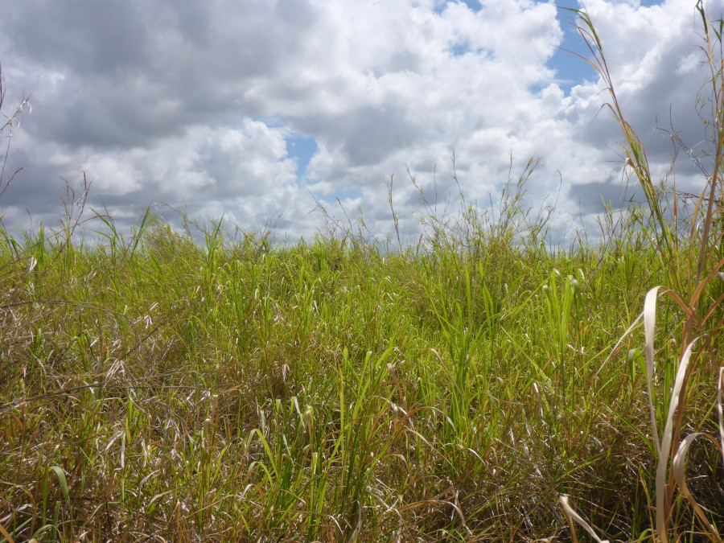

Example session of the work with vegetation-plot observations in R using the package vegtable and a open accessible data set of more than 300 observations collected from published references and field surveys. This tutorial explains how to use the package vegtable to process data before starting statistical assessments. An additional task handled in this document is the use of taxonomic information and further species’ attributes (traits) for calculating statistics at the plot level.

Stand of the Vigno vexillatae-Panicetum fluviicolae Behn,
Alvarez, Mutebi & Becker 2022 in an undistrubed area within the
Kilombero floodplain, Tanzania (CC-BY-NC K. Behn).
This document contains an example session of the work with plot observations done in East African wetlands, mixing field surveys and data collected from published references. This data was assessed in the publication by Behn et al. (2022) and is a modified version of its Supplement S4 (Alvarez and Behn 2021).
This is an attempt to ensure reproducibility on the published statistical results and promote collaborative data assessment. Note that we use the term reproducibility in the sense of Cassey and Blackburn (2006) and Claerbout and Karrenbach (1992) but it may have a different meaning (McArthur 2019; Plesser 2018).
The data set is formated using the package vegtable.
Taxonomic information and species attributes are embedded into
vegtable but using taxlist.
Furthermore, bibliographic references are included by using the package
biblio.
We recommend to install all these packages from their development versions at GitHub.
library(package = "devtools")
install_github(repo = "ropensci/taxlist", build_vignettes = TRUE)
install_github(repo = "kamapu/vegtable")
install_github(repo = "kamapu/biblio")To reproduce the interactive map at the end of this tutorial, you
will need the package leaflet.
install.packages("leaflet")To run this session, you need to download the data by a click on this link. Then copy and paste it into your working directory.
Alternatively you may prefer to download a copy of the R-image using the following command in your running session.
download.file(url = "https://zenodo.org/record/5111485/files/swea.rda?download=1",
destfile = "swea.rda")This data set was exported from the database SWEA-Dataveg, which is registered in the Global Index of Vegetation-Plot Databases (GIVD) as AF-00-006 (Alvarez, Curran, and Malombe 2021). To optimize the content of the object, the data was pre-processed, whereby the most important changes regarding the original data are:
To start the work with the distributed data set, you need to load
vegtable to your session.
## Metadata
name: East African Wetlands
authors: K. Behn and M. Alvarez
year: 2021
object size: 419.3 Kb
validity: TRUE
## Content
number of plots: 325
plots with records: 325
variables in header: 12
number of relations: 3
## Taxonomic List
taxon names: 1354
taxon concepts: 601
validity: TRUE Plots observations contain records of species’ abundance in the
respective plots. In vegetation-plot databases, those records may be
collected from diverse sources and refer to different nomenclatures,
thus a link between synonyms and accepted names to taxon concepts is
required. Additionally, taxonomic ranks, parent-child relationships, and
functional traits have to be considered for further ecological
assessments. To deal with this, there is a slot called
species including the taxonomic list in a
taxlist object.
summary(object = swea@species)object size: 244.6 Kb
validation of 'taxlist' object: TRUE
number of taxon usage names: 1354
number of taxon concepts: 601
trait entries: 320
number of trait variables: 4
taxon views: 6
concepts with parents: 599
concepts with children: 266
hierarchical levels: form < variety < subspecies < species < genus < family < phylum
number of concepts in level form: 0
number of concepts in level variety: 0
number of concepts in level subspecies: 0
number of concepts in level species: 335
number of concepts in level genus: 202
number of concepts in level family: 62
number of concepts in level phylum: 2In this taxonomic list you can also query for some species using its name (partial matchings are also allowed).
summary(object = swea@species, ConceptID = "Cyclosorus interruptus",
secundum = "bibtexkey")------------------------------
concept ID: 50074
view ID: 1 - CJBGSANBI2012
level: species
parent: 55055 Cyclosorus Link
# accepted name:
202792 Cyclosorus interruptus (Willd.) H. Itô
# synonyms (13):
22425 Thelypteris interrupta (Willd.) K. Iwats.
28798 Aspidium gongylodes Schkuhr
28802 Dryopteris gongylodes (Schkuhr) Kuntze
28807 Pteris interrupta Willd.
202793 Cyclosorus striatus Ching
205463 Aspidium continuum Desv.
205464 Aspidium ecklonii Kunze
205465 Aspidium obtusatum Sw.
205466 Aspidium pteroides (Retz.) Sw.
205467 Aspidium serra (Sw.) Sw.
205468 Aspidium serratum Sw.
205469 Aspidium unitum (L.) Sw.
205470 Nephrodium propinquum R. Br.
------------------------------This summary shows the ID of the taxon (taxon concept ID), the taxon view (reference used for the nomeclature), its taxonomic rank (level), the parent taxon (the parent genus in this case), the accepted name and a list of synonyms (both including usage name ID).
You can also use the function indented_list() to have an
overview of the hierarchical structure including this taxon.
indented_list(object = swea@species, filter = "Cyclosorus")Pteridophyta NA
Thelypteridaceae NA
Cyclosorus Link
Cyclosorus interruptus (Willd.) H. Itô For more details on the structure of taxlist objects,
see Alvarez and Luebert
(2018).
Information related to plot observations (e.g. soil properties,
slope, exposition, coordinates) is stored as a data.frame
in the slot header. In this column-oriented table the
variable ReleveID represents the primary key.
head(x = swea@header) ReleveID original_number record_date plot_size elevation
157 259 <NA> 2012-04-25 4 348
212 249 <NA> 2012-04-18 4 351
213 246 <NA> 2012-04-18 4 333
214 245 <NA> 2012-04-18 4 343
215 250 <NA> 2012-04-18 4 351
216 221 <NA> 2012-03-27 4 337
cover_total community_type height_total longitude latitude
157 100 397 NA 38.32523 -5.084125
212 100 390 NA 38.32692 -5.076853
213 100 390 NA 38.32741 -5.075487
214 100 390 NA 38.32727 -5.075572
215 100 390 NA 38.32692 -5.076853
216 90 390 NA 38.32638 -5.077153
country_code data_source
157 TZA 1
212 TZA 1
213 TZA 1
214 TZA 1
215 TZA 1
216 TZA 1Categorical variables in header may need detailed descriptions on their respective classes, if they are factorized. For this purpose, a slot called relations contains the respective data frames. Both the data frame in the slot relations and the variable shared with slot header have the same name.
names(x = swea@relations)[1] "community_type" "country_code" "data_source" For instance the field country_code has a relation of the same name with an homonymous primary key. This field works then as a foreign key in slot header.
head(x = swea@relations$country_code) country_code name_short name_long
17 KEN Kenya Kenya
20 TZA Tanzania Tanzania
33 COD Dem. Rep. Congo Democratic Republic of the Congo
38 ZAF South Africa South Africa
82 ZMB Zambia Zambia
125 BDI Burundi BurundiThe core of plot observations is the record of taxa (usually plant
species) indicating either their occurrence or their abundance in the
respective plots. Since vegtable objects emulate relational
databases, this information is contained in column-oriented table, at
the slot samples.
head(x = swea@samples) ReleveID TaxonUsageID cover_percentage cover_class
15 3661 461 5 1
16 3662 461 2 1
17 3663 461 1 1
18 3748 461 1 1
19 3750 461 1 1
21 3817 461 5 1In this table, the variable ReleveID is pointing to the plot observations in slot header, while the variable TaxonUsageID is linked to the slot species. The later is rather a mention of the taxon usage name recorded in the plot, which will be recognized either as synonym or accepted name of a taxon concept. The abundance of the species in plots (variable cover_class) corresponds to the Braun-Blanquet scale with the classes “+” and “r” merged with “1”, as previously mentioned.
Cocktail classification is a supervised classification method based on logical algorithms. The main elements in these algorithms are the definition of species groups (cocktail groups) and dominant species. The algorithms will recognize plot observations in a vegetation unit by the occurrence of more than a half of the members of a coctail group, the absence of a group and whether a dominant species is present over a cut-level of abundance or not (Bruelheide 1997; Kočí, Chytr‘y, and Tich‘y 2003).
The package vegtable defines an object class called
shaker. This object will always depend on a
vegtable object (companion). A shaker is
included in the distributed image, which is called
syntax.
summary(object = syntax, companion = swea)The design of cocktail algorithms is a time-consuming, iterative
process and will not be explained here. We recommend to use the software
Juice
for this purpose (Tichý 2002). The
function make_cocktail() will execute the expert system and
produce the classification that can be inserted in the data set.
swea@header <- make_cocktail(shaker = syntax, vegtable = swea, cover = "cover_class",
syntax = "veg_unit")For every formula contained in syntax, a binary variable
indicating whether a plot is belonging to a vegetation unit or not.
Additionally a column defined as veg_unit is inserted
with the name of the respective units. Note that in this column
observations that are not recognized in any vegetation unit get a
NA value, while observation recognized in more than one
unit get a + symbol.
+ 01Isc-Fim 02Fui-Amm 03Cor-Pan 04Gra-Ipo 05Cen-Per 06Cyp-Cyp
36 11 8 17 8 12 59
07Cyp-Fui 08Mel-Lee 09Cyp-lat 10Cyp-Dry 11Phr-mau 12PhrEch 13Vig-Pan
42 19 25 50 22 5 11 The taxonomic list includes information on life forms and origin
(native or introduced to sub-Saharan Africa). This information can be
summarized for every plot, for instance calculating the proportion of
life forms, weighted by the abundance. For it, we can use the function
trait_proportion(), which will aggregate proportions of
single life form classes into plot observations. Since we like to
collect the information in the slot header with further
plot properties, we will use the option in_header=TRUE.
swea <- trait_proportion(trait = "life_form", object = swea, weight = "cover_class",
in_header = TRUE)
# Boxplot
par(las = 1, mar = c(4, 8, 1, 1))
boxplot(formula = obligate_annual_prop ~ veg_unit, data = swea@header, horizontal = TRUE,
col = "grey", ylab = "", xlab = "Proportion of Annual Plants")
abline(v = 0.5, lty = "dashed")Note that trait_proprotion() is designed to calculate
proportions of categorical traits. Alternatively the function
trait_stats() is suitable for statistics of numerical
traits (e.g. calculation of weighted averages).
Taxonomic information is not mandatory in taxonomic lists. In slot
species of the object swea both, the
taxonomic ranks and the parent-child relationships are included.
summary(object = swea@species)object size: 244.6 Kb
validation of 'taxlist' object: TRUE
number of taxon usage names: 1354
number of taxon concepts: 601
trait entries: 320
number of trait variables: 4
taxon views: 6
concepts with parents: 599
concepts with children: 266
hierarchical levels: form < variety < subspecies < species < genus < family < phylum
number of concepts in level form: 0
number of concepts in level variety: 0
number of concepts in level subspecies: 0
number of concepts in level species: 335
number of concepts in level genus: 202
number of concepts in level family: 62
number of concepts in level phylum: 2For statistical assessments it is necessary to set taxonomic
information as species traits. This can be managed with the function
tax2traits().
swea@species <- tax2traits(object = swea@species, get_names = TRUE)
head(x = swea@species@taxonTraits) TaxonConceptID life_form origin_ssa origin_source
2 56944 tussock_plant native 3
4 56931 tussock_plant native 3
6 56768 tussock_plant native 3
8 249 tussock_plant native 3
9 54697 tussock_plant native 3
10 52150 annual_plant adventive 3
origin_remarks species genus
2 <NA> Anosporum pectinatum Anosporum
4 <NA> Carex mannii Carex
6 <NA> Cyperus platycaulis Cyperus
8 <NA> Epilobium salignum Epilobium
9 <NA> Epilobium stereophyllum Epilobium
10 Mexico to S. Tropical America Erigeron sumatrensis Erigeron
family phylum
2 Cyperaceae Magnoliophyta
4 Cyperaceae Magnoliophyta
6 Cyperaceae Magnoliophyta
8 Onagraceae Magnoliophyta
9 Onagraceae Magnoliophyta
10 Compositae MagnoliophytaThe last function inserted new columns for taxonomic ranks indicating the usage name of each taxon (without author name) and its respective parent taxa. In the next step we will calculate the frequency of species in each family.
# Counting species per family
Families <- count_taxa(object = species ~ family, data = swea@species)
# Sorting families by frequency
Families <- Families[order(Families$species_count, decreasing = TRUE), ]
# Ploting the 20 most frequent families
par(las = 2, mar = c(10, 5, 1, 1))
with(data = Families[1:20,], expr = barplot(species_count, names.arg = family,
ylab = "Number of Species"))To see if there is some trend in the proportion of a family, for
instance Poaceae, we can use again the function
trait_proportion(). Herewith we will weight the proportion
of families by the abundance of the respective species in the plot.
swea <- trait_proportion(trait = "family", object = swea, weight = "cover_class",
in_header = TRUE)
# Boxplot
par(las = 1, mar = c(4, 8, 1, 1))
boxplot(formula = Poaceae_prop ~ veg_unit, data = swea@header, horizontal = TRUE,
col = "grey", ylab = "", xlab = "Proportion of Grasses")
abline(v = 0.5, lty = "dashed")The structure of vegtable objects is quite complex and
some assessments or displays will require a proper export method. Here
we introduce some of the basic ways to export information for further
assessments. For instance, some of those functions will work on a subset
of plots, which include the species Cyperus papyrus L.
cype_pap <- subset(x = swea, subset = TaxonName == "Cyperus papyrus", slot = "taxonNames")In the previous step only records for C. papyrus L. are preserved, thus we will use the plot observation ids to produce a subset with full relevés.
The most common format for displaying vegetation data is the cross
table, with species as rows and plots as columns. To produce cross
tables there is the function crosstable(). This function
requires a formula in the form abundance twidles species and
plot (in the example,
cover_class ~ ReleveID + AcceptedName) and a function to
summarize multiple occurrences of a species in a plot (e.g. the maximum
value). Depending on the size of the data set, this process may require
some seconds.
Table <- crosstable(formula = cover_class ~ ReleveID + AcceptedName, data = cype_pap,
FUN = max)Note that the terms ReleveID and
AcceptedName are the key variables for the slot
header and the object taxlist in slot
species, respectively.
It is also possible to insert additional columns besides the species
list, for instance to add the author name (AuthorName
in taxlist) and the family, you need to add them as terms
in the formula.
Table <- crosstable(formula = cover_class ~ ReleveID + AcceptedName + AuthorName + family,
data = cype_pap, FUN = max, na_to_zero = TRUE)
# First 5 rows and 10 columns
Table[1:5, 1:10] AcceptedName AuthorName family
1 Asystasia gangetica (L.) T. Anderson Acanthaceae
2 Hygrophila auriculata (Schumach.) Heine Acanthaceae
3 Hypoestes aristata (Vahl) Sol. ex Roem. & Schult. Acanthaceae
4 Thunbergia alata Bojer ex Sims Acanthaceae
5 Acanthus polystachyus Delile Acanthaceae
3698 3739 3882 4752 4945 4950 5256
1 1 1 1 1 1 1 1
2 0 0 0 0 0 0 0
3 0 0 0 0 0 0 4
4 0 0 0 0 0 0 0
5 0 0 1 0 0 0 0Some statistical software and R-packages may need the first cross table but transposed. This can be achieved by changing the formula in the function.
Table <- crosstable(formula = cover_class ~ AcceptedName + ReleveID, data = swea,
FUN = max, as_matrix = TRUE)There is also a possibility to export the content of plot
observations to Juice.
Juice is a freeware specialized in the analysis of vegetation-plot data
sets and implement a series of statistical assessment methods. To
produce the data sets, there is the function write_juice(),
which is working in a similar way as crosstable(). Here we
need additionally to specify which header variables will be exported and
which are the geographical coordinates (assumed as decimal degrees in
WGS84).
write_juice(data = swea, file = "swea", formula = cover_class ~ ReleveID + AcceptedName,
db_name = swea@description$name,
header = c("country_code", "data_source", "record_date", "plot_size", "elevation",
"veg_unit"),
coords = c("longitude", "latitude"), FUN = max)This command will produce two files in your working directory, the file swea_table.txt with the cross table, and swea_header.txt with the information of plots (also called header table). To import those files to Juice, yo need to follow these steps.
The plot observations included in this data set are geo-referenced, where the exactitude of the location is depending on the data source (some data are geo-referenced according to the study site description of the respective publication).
The location of plot observations can be mapped by using the package
leaflet.
library(package = leaflet)
leaflet(data = swea@header, width = "100%") %>%
addProviderTiles("Esri.WorldImagery") %>%
addMarkers(lng = ~longitude, lat = ~latitude, popup = ~paste(ReleveID),
clusterOptions = markerClusterOptions()) %>%
addMiniMap(width = 100, height = 100)22-07-2022